| 日付 | 2013年9月28日（土） |
|---|---|
| 山域 | 浅間周辺 |
| メンバー | 家族（妻、長女・2歳、長男・0歳） |
| 山行形態 | 子連れ日帰り |
| アクセス | 車 |
| ルート (Map) | 地蔵峠 (10:01) - (11:53) 湯ノ丸山 (12:39) - (13:45) 地蔵峠 |
浅間山の西には黒斑山、篭ノ登山、湯ノ丸山などの2000m級の山々が並んでいる。
これらの山々は標高の割に手軽に登れ、多くの登山者が訪れる。
2年前にお手軽登山を求めて篭ノ登山に登った際に
湯ノ丸山を眺めて以来、いつかこの山に登ろうと思っていた。
レンゲツツジの咲く6月が旬の山なのだが、
秋晴れの一日に登ってみることにする。
地蔵峠の駐車場に到着。標高1730m。
ここは2年前に宿泊した湯の丸高原ホテルのあるところだ。
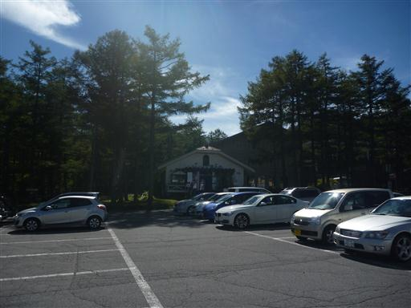
まずはスキー場を登っていく。木がないため展望は非常に良い。
娘は珍しくキャリアに乗らず、最初から歩いている。
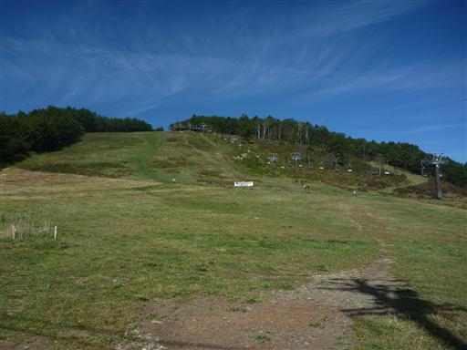
空は秋らしい雲が広がっている。
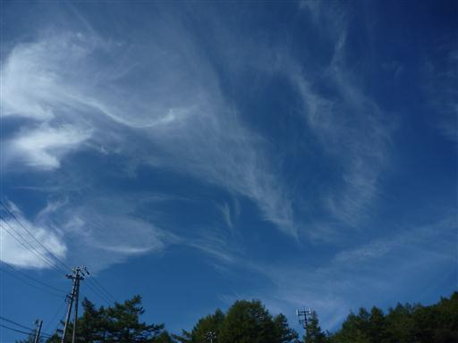
足元を見るとキシャヤスデを発見。笠取山で大発生していた虫だ。
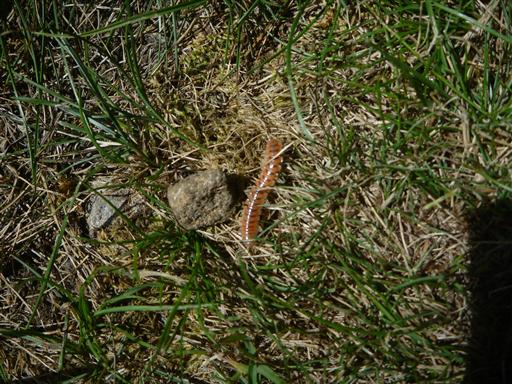
案外傾斜はきつい。手をつないでゆっくり登っていく。
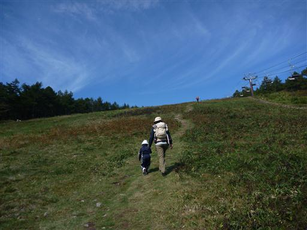
振り返ると西篭ノ登山がきれいに見えている。
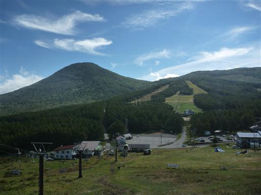
この辺りは牧場にもなっているらしく、登山道の付近で牛が草を食んでいる。
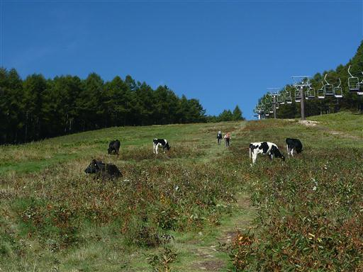
大人しい牛だが体は大きい。娘は少々腰が引けている。
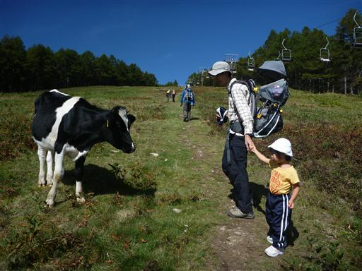
スキー場の上部を過ぎて牧柵を越えると、いったん道は平坦になる。
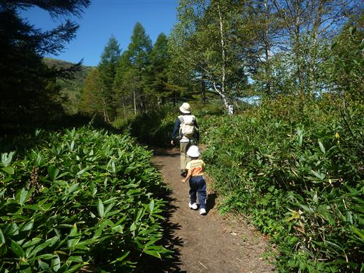
しばらく歩くと目の前に湯ノ丸山が見えてきた。ゆったりとした美しい山だ。
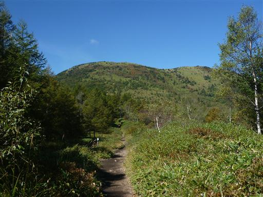
綿毛に覆われた植物をよく見かける。調べてみるとヤナギランの綿毛のようだ。
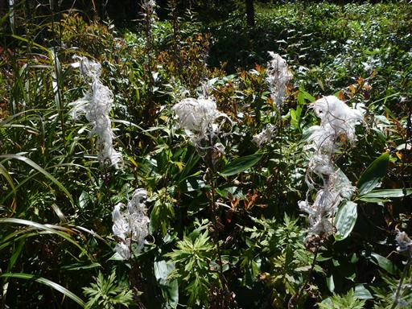
小さな鐘が設置されている。何度か鳴らしてみる。
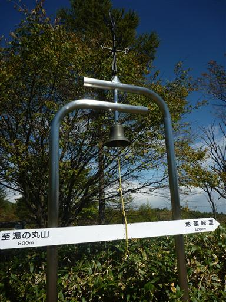
もう昼間なのに山の上に月が出ている。娘は最近月が好きで、見つけて喜んでいる。
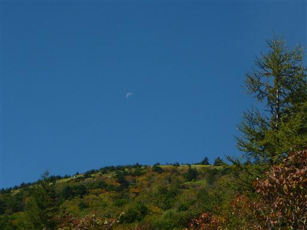
湯ノ丸山に近づくと本格的な登りになる。スキー場以来、本日2度目の登りだ。
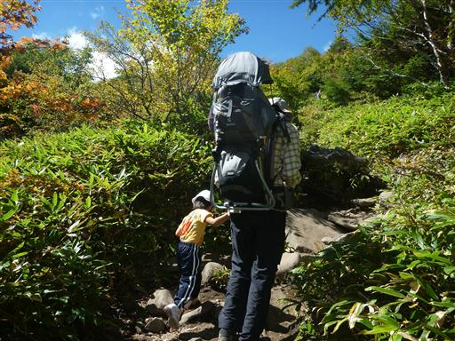
素晴らしい展望の道を登っていく。登山道は大きな岩がごろごろしていて案外歩きにくく、
娘が音を上げたため、途中でキャリアに乗せることにする。
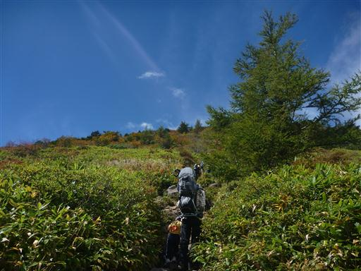
この辺りは葉がだいぶ色づいてきている。
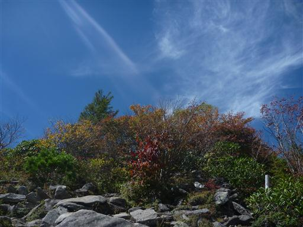
快晴の中の山登りだったが、途中で北から巨大な雲がやってきて視界を半分隠してしまう。
本日は北の方が天気が良い予報だったのだが…
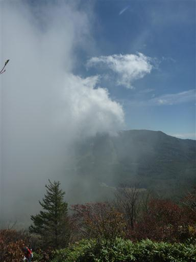
急な坂を登りきると山頂部が見えてきて、傾斜は緩やかになる。
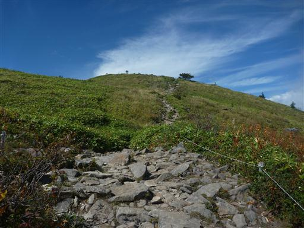
この辺りはイワインチンがたくさん咲いている。葉が特徴的だ。
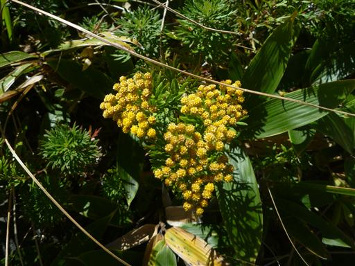
湯ノ丸山の山頂に到着する。標高2101m。
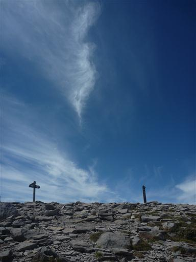
山頂は樹木がほとんどない。
360度の展望台だが残念ながら北半分は雲に覆われたままだ。
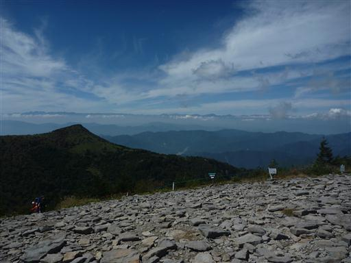
すぐ目の前には烏帽子岳が見えている。尖った山頂を持つ格好良いピークだ。
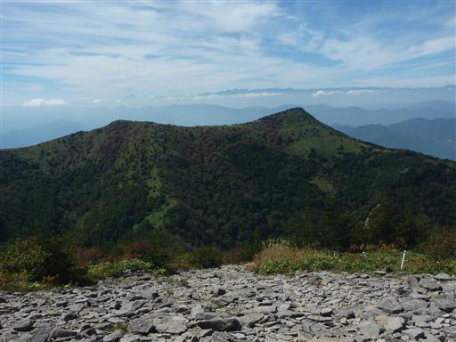
遠くには北アルプスの山々が見えている。
中央に見えるのは鹿島槍ヶ岳、左は剱岳、右は五竜岳だ。
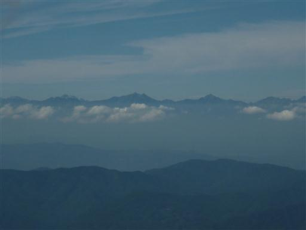
腰を下ろして昼食をとる。太陽を遮るものがないので少し辛い。
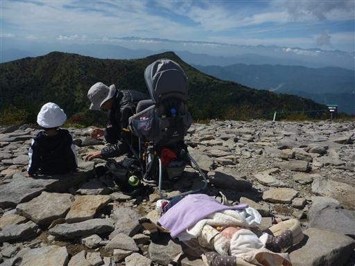
山頂付近まで雲がやってきた。昼食をとってしばらく展望を眺めたら下山を開始する。
烏帽子岳経由で帰るのがあるべきルートなのだが、このメンバーでは往復登山が限界だ。
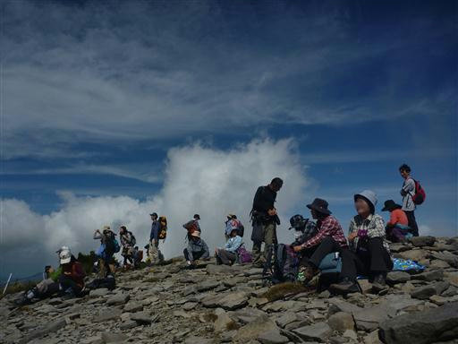
雲はやって来たり去ったりを繰り返しているが、何とか視界は開けている。
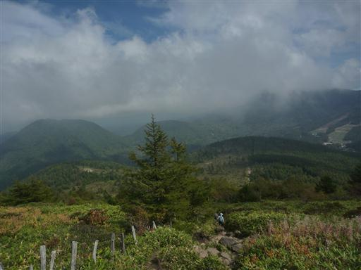
足元にきれいに紅葉している葉がある。

牧柵を抜けて下山する。
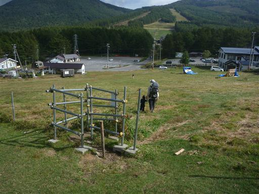
登りと同じ道を下ったが、牛はすでに下の方に移動していた。
しばらく牛を見学してから帰ることにする。
篭ノ登山と並び、手軽に登れて素晴らしい展望の広がる山だった。
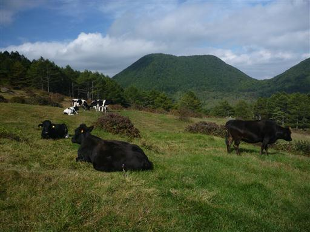